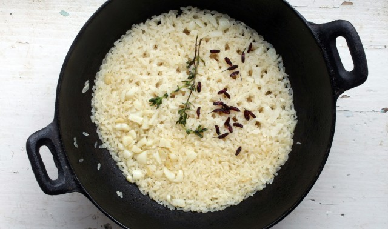

Rice and beans are extremely easy once you get used to them, but there's some
variability with things like water-to-rice ratio, cook time for the beans, etc.
that makes this worth writing down. The numbers you see here are specific to my
fairly inexpensive equipment in San Diego -- I imagine that all the quantities here
are subject to change in a properly sophisticated kitchen. Also note that I've omitted
a discussion of seasonings here, but adding stuff to the water for both rice and
beans shows promise (I especially like citrus-y seasoning mixes on the rice).
Ingredients
- 1 cup of dried black beans
- 1/2 cup uncooked long-grain brown rice
- Salt to taste, for both the rice water and the bean water
-
1 teaspoon of extra virgin olive oil (preventing the rice cooker from boiling
over amidst tougher-to-cook brown rice)
- A reasonable amount of time. Cooking beans takes 1.5-2 hours
Steps to prepare
Because beans take so insufferably long to cook, we split this operation out into
separate steps for advance bean preparation, and on-the-fly rice preparation (which
we'll run concurrently with reheating the beans).
Cooking the beans ahead of time
-
Take your cup of beans and rinse them thoroughly in a strainer, tossing
occasionally with some light stirring around by hand. This will clear out any
dirt particles left over from the harvesting process, which seems to be a fairly
omnipresent thing in most bags I've bought from the store these days.
-
Pour 3.5 cups of water into a pot. Lightly salt the water to taste, then add your
freshly rinsed beans. Place on a high-heat burner uncovered until it reaches an
aggressively rolling boil.
-
Turn the heat down to a low setting (2-3 on my stove does it; not quite all the
way low) and cover the pot.
- Every so often check in on the consistency of the beans. You want to make sure
the beans don't burn on the bottom or sides of the pot, so add more water if
necessary.
-
Continue the simmering process for 1.5 hours or so. When you're finished the beans
should be soft, and you should be able to cut one easily with a fork. You don't want
crunchy, nor do you want falling apart / melting in your mouth -- that's too much.
-
Once done pour out the pot, straining out the bean juice. Place your completely
cooked beans into a large bowl, cover with foil, and place in the refrigerator
for later use.
You will have made enough at this point to last you 2-3 meals.
Pro tip: I've noticed that the skin of the bean will crack when
it's close to where we want it to be. If you see this, give the beans 5 more
minutes maximum and then take what you can get.
When you're ready to eat: cooking the rice
-
Put 1/2 cup rice into your rice cooker. It's long grain so no need to wash it.
Lightly mix with 1.25 cups water, the splash of olive oil, salt to taste,
and any other desired seasonings.
- Activate the rice cooker and set a timer. Cooking will take about 35-40 minutes.
-
When you've got about 7 minutes left on the timer, pop open your refrigerator and
scoop out 1 cup of beans from the bowl. Place in a pot and cover with a reasonable
amount of water. No need to salt this time.
-
Place your bean pot uncovered onto a high-heat burner and bring to a reasonable
(not necessarily aggressive -- you're just trying to reheat these things) boil.
This should complete around the same time as your rice cooker dings.
- Scrape the rice out from the rice cooker into a bowl. Season further to taste.
-
Strain your re-heated beans thoroughly, then pour them on top of your rice bowl.
For best results, mix the rice and beans until fairly homogenous. Enjoy!
Back to home